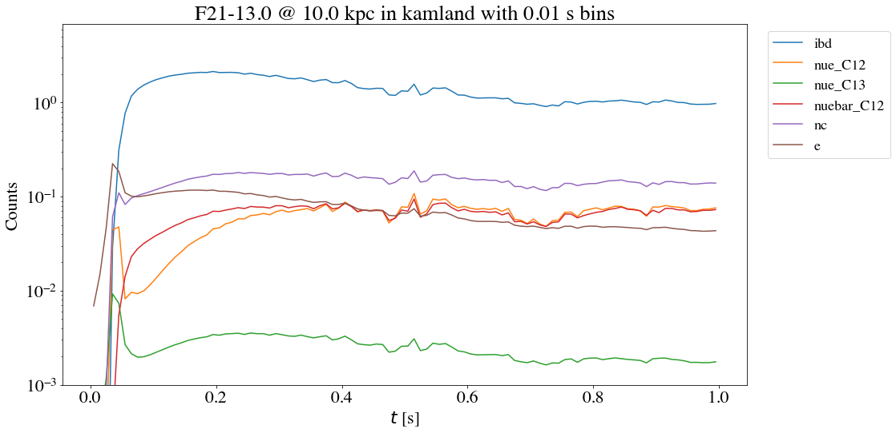
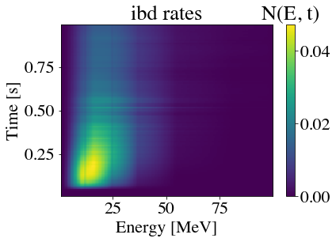
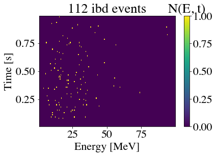

Time series
Run a single model times series and generate random events.
from sspike import pnut, beer
from sspike.supernova import Supernova
from sspike.detectors import Detector
Detector
detector = Detector('kamland')
Supernova
model = 'Fornax_2021'
progenitor = {'mass': 13}
transformation = 'NoTransformation'
distance = 10.0
t_bins = 100
t_start = 0.0
t_end = 1.0
sn = Supernova(model, progenitor, transformation, distance, t_bins, t_start, t_end)
Event rates for each channel
counts = pnut.time_events(sn, detector)
beer.plot_series(sn, detector)

Single channel rates
chan = 'ibd'
beer.plot_N_chan(sn, detector, chan)

chan = 'ibd'
beer.plot_N_chan(sn, detector, chan, events=True)
